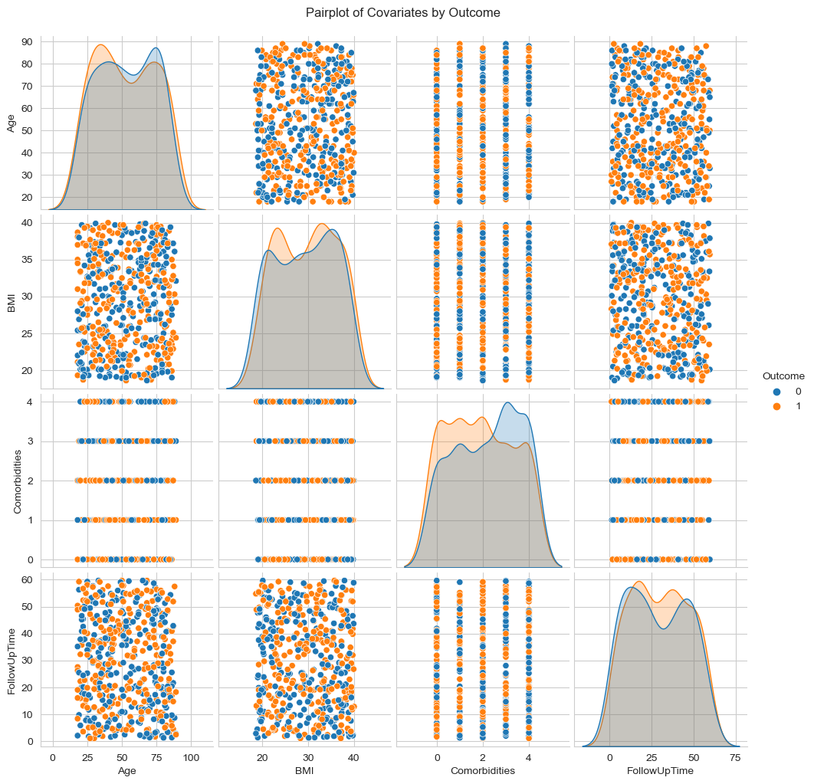
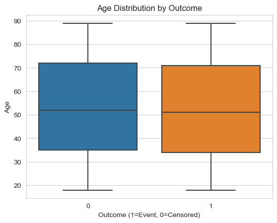
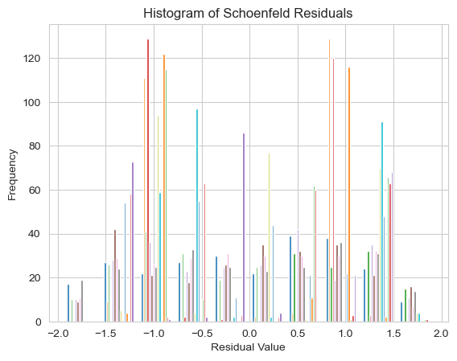

Code
import pandas as pd
import numpy as np
import matplotlib.pyplot as plt
import statistics as stats
import seaborn as snsimport pandas as pd
import numpy as np
import matplotlib.pyplot as plt
import statistics as stats
import seaborn as sns#Create the dataset
# Set seed for reproducibility
np.random.seed(42)
# Number of samples
n_samples = 500
# Generate mock data
data = {
"PatientID": np.arange(1, n_samples + 1),
"Group": np.random.choice([0, 1], size=n_samples), # 0 for control, 1 for experimental
"Age": np.random.randint(18, 90, size=n_samples),
"Gender": np.random.choice(["Male", "Female"], size=n_samples),
"BMI": np.round(np.random.uniform(18.5, 40, size=n_samples), 1),
"BloodPressure": np.round(np.random.uniform(90, 180, size=n_samples), 1),
"Cholesterol": np.round(np.random.uniform(100, 300, size=n_samples), 1),
"Glucose": np.round(np.random.uniform(70, 200, size=n_samples), 1),
"SmokingStatus": np.random.choice(["Never", "Former", "Current"], size=n_samples),
"PhysicalActivity": np.random.choice(["Low", "Moderate", "High"], size=n_samples),
"Comorbidities": np.random.randint(0, 5, size=n_samples),
"Medications": np.random.choice([0, 1], size=n_samples), # 0 for No Medication, 1 for Taking Some Medication
"FollowUpTime": np.round(np.random.uniform(1, 60, size=n_samples), 1), #in months
"Outcome": np.random.choice([0, 1], size=n_samples), # 0 for Censored, 1 for Event Occurred
"Education": np.random.choice(["High School", "Bachelor", "Master", "PhD"], size=n_samples),
"RaceEthnicity": np.random.choice(["White", "Black", "Hispanic", "Asian", "Other"], size=n_samples),
"Income": np.random.choice(["<30K", "30-60K", "60-100K", ">100K"], size=n_samples),
"MaritalStatus": np.random.choice(["Single", "Married", "Divorced", "Widowed"], size=n_samples),
"EmploymentStatus": np.random.choice(["Employed", "Unemployed", "Retired"], size=n_samples),
}
# Create DataFrame
mock_data = pd.DataFrame(data)
mock_data.head(10)| PatientID | Group | Age | Gender | BMI | BloodPressure | Cholesterol | Glucose | SmokingStatus | PhysicalActivity | Comorbidities | Medications | FollowUpTime | Outcome | Education | RaceEthnicity | Income | MaritalStatus | EmploymentStatus | |
|---|---|---|---|---|---|---|---|---|---|---|---|---|---|---|---|---|---|---|---|
| 0 | 1 | 0 | 80 | Male | 37.9 | 165.4 | 129.5 | 95.3 | Never | High | 2 | 0 | 18.5 | 1 | Bachelor | Hispanic | 60-100K | Divorced | Employed |
| 1 | 2 | 1 | 49 | Female | 37.3 | 175.0 | 165.6 | 77.5 | Current | High | 2 | 1 | 10.6 | 0 | Bachelor | Black | >100K | Married | Retired |
| 2 | 3 | 0 | 50 | Male | 31.3 | 151.5 | 186.8 | 114.5 | Never | Low | 3 | 0 | 40.9 | 0 | High School | Black | >100K | Divorced | Employed |
| 3 | 4 | 0 | 84 | Male | 31.4 | 134.7 | 117.7 | 105.1 | Never | Low | 0 | 0 | 3.2 | 1 | High School | Other | >100K | Single | Employed |
| 4 | 5 | 0 | 35 | Female | 32.8 | 145.6 | 144.1 | 195.6 | Current | High | 2 | 1 | 37.6 | 1 | Master | Black | <30K | Widowed | Retired |
| 5 | 6 | 1 | 42 | Male | 22.3 | 168.2 | 219.6 | 142.5 | Former | Moderate | 4 | 1 | 42.2 | 0 | Bachelor | Black | <30K | Widowed | Retired |
| 6 | 7 | 0 | 71 | Male | 38.2 | 141.4 | 247.1 | 115.1 | Current | Low | 4 | 1 | 13.7 | 0 | Master | White | <30K | Single | Unemployed |
| 7 | 8 | 0 | 75 | Male | 27.5 | 92.7 | 299.7 | 145.5 | Current | Moderate | 3 | 0 | 3.5 | 0 | Master | Other | 60-100K | Divorced | Unemployed |
| 8 | 9 | 0 | 84 | Male | 26.7 | 173.8 | 286.6 | 88.1 | Current | Low | 0 | 1 | 22.5 | 1 | High School | Other | <30K | Divorced | Unemployed |
| 9 | 10 | 1 | 63 | Female | 29.7 | 152.1 | 228.5 | 127.7 | Former | Low | 0 | 1 | 6.8 | 0 | PhD | Black | <30K | Single | Unemployed |
#Descriptive Stats of numerical vars
df_describe = mock_data.describe().round(2).drop(columns = ["PatientID","Group","Outcome","Medications", "Comorbidities"])
df_describe = df_describe.reset_index().drop(index=0).set_index("index")
df_describe.index.name=None
df_describe.head(10)| Age | BMI | BloodPressure | Cholesterol | Glucose | FollowUpTime | |
|---|---|---|---|---|---|---|
| mean | 52.84 | 29.47 | 135.41 | 198.67 | 135.12 | 29.19 |
| std | 20.89 | 6.40 | 25.69 | 57.29 | 38.28 | 17.27 |
| min | 18.00 | 18.60 | 90.30 | 100.30 | 70.00 | 1.10 |
| 25% | 34.00 | 23.60 | 113.05 | 151.85 | 103.42 | 14.38 |
| 50% | 52.00 | 29.70 | 136.80 | 197.50 | 134.65 | 28.55 |
| 75% | 72.00 | 35.02 | 156.65 | 246.50 | 169.42 | 44.20 |
| max | 89.00 | 40.00 | 179.90 | 299.70 | 199.70 | 59.70 |
#Demographic Information
# Age Gender Education RaceEthnicity Income MaritalStatus EmploymentStatus SmokingStatus PhysicalActivity Comorbidities
df_hold = mock_data[['Age', 'Gender', 'Education', 'RaceEthnicity', 'Income', 'MaritalStatus', 'EmploymentStatus','SmokingStatus', 'PhysicalActivity', 'Comorbidities']]
# Define the bins and labels for age groups
bins = [-float('inf'), 17, 24, 34, 44, 54, 64, float('inf')]
labels = ['Under 18', '18-24 years old', '25-34 years old', '35-44 years old', '45-54 years old', '55-64 years old', '65 or older']
# Create a copy of the DataFrame to avoid the warning
dem = df_hold.copy()
# Create a new column 'AgeGroup' with categorized age groups
dem.loc[:, 'AgeGroup'] = pd.cut(dem['Age'], bins=bins, labels=labels, right=True)
# Create a demographic table with counts for each category
demographic_counts = {
'Variable': [],
'Category': [],
'Count': []
}
# Define a list of columns to include in the table
columns = ['AgeGroup', 'Gender', 'Education', 'RaceEthnicity', 'Income', 'MaritalStatus', 'EmploymentStatus', 'SmokingStatus', 'PhysicalActivity', 'Comorbidities']
# Create a demographic table with counts for each category
demographic_counts = {
'Variable': [],
'Category': [],
'N': [],
}
# Define a list of columns to include in the table
columns = ['AgeGroup', 'Gender', 'Education', 'RaceEthnicity', 'Income', 'MaritalStatus', 'EmploymentStatus', 'SmokingStatus', 'PhysicalActivity', 'Comorbidities']
# Calculate counts for each variable and its categories
for column in columns:
counts = dem[column].value_counts()
for category, count in counts.items():
demographic_counts['Variable'].append(column)
demographic_counts['Category'].append(category)
demographic_counts['N'].append(count)
# Create a DataFrame from the counts
demographic_table = pd.DataFrame(demographic_counts)
print(demographic_table) Variable Category N
0 AgeGroup 65 or older 176
1 AgeGroup 25-34 years old 77
2 AgeGroup 35-44 years old 75
3 AgeGroup 45-54 years old 61
4 AgeGroup 55-64 years old 60
5 AgeGroup 18-24 years old 51
6 AgeGroup Under 18 0
7 Gender Male 261
8 Gender Female 239
9 Education Bachelor 137
10 Education PhD 134
11 Education High School 120
12 Education Master 109
13 RaceEthnicity Other 109
14 RaceEthnicity Black 108
15 RaceEthnicity Hispanic 97
16 RaceEthnicity White 93
17 RaceEthnicity Asian 93
18 Income 30-60K 139
19 Income <30K 127
20 Income 60-100K 121
21 Income >100K 113
22 MaritalStatus Divorced 128
23 MaritalStatus Single 127
24 MaritalStatus Widowed 123
25 MaritalStatus Married 122
26 EmploymentStatus Retired 177
27 EmploymentStatus Unemployed 173
28 EmploymentStatus Employed 150
29 SmokingStatus Never 175
30 SmokingStatus Current 165
31 SmokingStatus Former 160
32 PhysicalActivity High 179
33 PhysicalActivity Moderate 170
34 PhysicalActivity Low 151
35 Comorbidities 4 105
36 Comorbidities 3 104
37 Comorbidities 1 98
38 Comorbidities 2 97
39 Comorbidities 0 96# Missing Value -- General Practice, but redundant here considering this is a rand-gerenrated DF.
missing = mock_data.isnull().sum()
print(missing)PatientID 0
Group 0
Age 0
Gender 0
BMI 0
BloodPressure 0
Cholesterol 0
Glucose 0
SmokingStatus 0
PhysicalActivity 0
Comorbidities 0
Medications 0
FollowUpTime 0
Outcome 0
Education 0
RaceEthnicity 0
Income 0
MaritalStatus 0
EmploymentStatus 0
dtype: int64#Group Distribution
groups = mock_data.copy(deep=True)
groups['Group'] = groups['Group'].replace({0:'Experimental', 1:'Control'})
groups['Outcome'] = groups['Outcome'].replace({0:'Censored', 1:'Event Occurred'})
grp_outcome = groups.groupby(['Group', 'Outcome']).size().reset_index(name='Count')
# Set the aesthetic style of the plots
sns.set_style("whitegrid")
# Create the bar plot
plt.figure(figsize=(12, 6), dpi=90)
bar_plot = sns.barplot(x='Group', y='Count', hue='Outcome', data=grp_outcome, palette='viridis')
# Add titles and labels
plt.title('Event Occurrence by Group Type', fontsize=18)
plt.xlabel('')
plt.ylabel('Count')
plt.legend(title='Outcome', loc="lower right")
plt.xticks(fontsize=12)
# Add count annotations to the bars
for p in bar_plot.patches:
height = p.get_height()
bar_plot.annotate(f'{int(height)}',
(p.get_x() + p.get_width() / 2., height),
ha='center', va='center', fontsize=14, color='black', xytext=(0, 5),
textcoords='offset points')
# Show the plot
plt.show()# Comparisoon of Follow-Up Time by Group
sns.boxplot(x='Group', y='FollowUpTime', data=mock_data)
plt.title('Follow-Up Time by Group')
plt.xlabel('Group (0=Control, 1=Experimental)')
plt.ylabel('Follow-Up Time (Months)')
plt.show()# Covariates
# Suppress specific FutureWarnings related to Seaborn
import warnings
warnings.filterwarnings("ignore", category=FutureWarning, module='seaborn._oldcore')
warnings.filterwarnings("ignore", category=UserWarning, module='seaborn.axisgrid')
# Ensure there are no infinite values in the
mock_data.replace([np.inf, -np.inf], np.nan, inplace=True)
# Pairplot to examine relationships
pairplot = sns.pairplot(mock_data[['Age', 'BMI', 'Comorbidities', 'FollowUpTime', 'Outcome']], hue='Outcome')
pairplot.fig.suptitle('Pairplot of Covariates by Outcome', y=1.02)
plt.show()
# Distribution of Age by Outcome
sns.boxplot(x='Outcome', y='Age', data=mock_data)
plt.title('Age Distribution by Outcome')
plt.xlabel('Outcome (1=Event, 0=Censored)')
plt.ylabel('Age')
plt.show()
# Distribution of BMI by Outcome
sns.boxplot(x='Outcome', y='BMI', data=mock_data)
plt.title('BMI Distribution by Outcome')
plt.xlabel('Outcome (1=Event, 0=Censored)')
plt.ylabel('BMI')
plt.show()
# Kaplan-Meier Curves
from lifelines import KaplanMeierFitter
kmf = KaplanMeierFitter()
# Filter data for each group and check if they are empty
control_group = mock_data[mock_data['Group'] == 0]
experimental_group = mock_data[mock_data['Group'] == 1]
# Fit the data for the control group
kmf.fit(control_group['FollowUpTime'], event_observed=control_group['Outcome'], label='Control')
ax = kmf.plot_survival_function()
# Fit the data for the experimental group
kmf.fit(experimental_group['FollowUpTime'], event_observed=experimental_group['Outcome'], label='Experimental')
kmf.plot_survival_function(ax=ax)
plt.title('Kaplan-Meier Survival Curves')
plt.xlabel('Time (Months)')
plt.ylabel('Survival Probability')
plt.show()# Statistical Testing: Log-Rank Test
from lifelines.statistics import logrank_test
# Extract survival times and event indicators
control_times = control_group['FollowUpTime']
control_events = control_group['Outcome']
experimental_times = experimental_group['FollowUpTime']
experimental_events = experimental_group['Outcome']
# Perform the log-rank test
results = logrank_test(control_times, experimental_times, event_observed_A=control_events, event_observed_B=experimental_events)
# Print the results
print(results)<lifelines.StatisticalResult: logrank_test>
t_0 = -1
null_distribution = chi squared
degrees_of_freedom = 1
test_name = logrank_test
---
test_statistic p -log2(p)
0.42 0.52 0.95# Cox Proportional Hazards Model
from lifelines import CoxPHFitter
from sklearn.preprocessing import StandardScaler
from statsmodels.stats.outliers_influence import variance_inflation_factor
import statsmodels.api as sm
from lifelines import CoxPHFitter
# Opt into future downcasting behavior
pd.set_option('future.no_silent_downcasting', True)
# Combine groups into a single DataFrame with the 'Group' as an additional covariate
combined_data = mock_data
combined_data['Gender'] = combined_data['Gender'].replace({'Male':1, 'Female':2})
combined_data['SmokingStatus'] = combined_data['SmokingStatus'].replace({'Never':0, 'Current':1,'Former':2})
combined_data['PhysicalActivity'] = combined_data['PhysicalActivity'].replace({'Low':1, 'Moderate':1,'High':2})
combined_data['Education'] = combined_data['Education'].replace({'High School':1, 'Bachelor':1,'Master':3, 'PhD':4})
combined_data['RaceEthnicity'] = combined_data['RaceEthnicity'].replace({'White':1, 'Black':2,'Hispanic':3, 'Asian':4, 'Other':5})
combined_data['Income'] = combined_data['Income'].replace({'<30K':1, '30-60K':2,'60-100K':3, '>100K':4})
combined_data['MaritalStatus'] = combined_data['MaritalStatus'].replace({'Single':1, 'Married':2,'Divorced':3, 'Widowed':4})
combined_data['EmploymentStatus'] = combined_data['EmploymentStatus'].replace({'Employed':1, 'Unemployed':2,'Retired':3})
combined_data['Group'] = combined_data['Group'].astype('category')
# Standardize features
X = combined_data.drop(columns=['FollowUpTime', 'Outcome'])
X = sm.add_constant(X) # adds a constant term to the predictors
scaler = StandardScaler()
scaled_features = scaler.fit_transform(X)
scaled_data = pd.DataFrame(scaled_features, columns=X.columns)
scaled_data['FollowUpTime'] = combined_data['FollowUpTime'].values
scaled_data['Outcome'] = combined_data['Outcome'].values
# Check for multicollinearity
vif = pd.DataFrame()
vif['Feature'] = scaled_data.columns
vif['VIF'] = [variance_inflation_factor(scaled_data.values, i) for i in range(scaled_data.shape[1])]
print(vif) Feature VIF
0 const NaN
1 PatientID 1.031726
2 Group 1.035117
3 Age 1.032283
4 Gender 1.054207
5 BMI 1.042135
6 BloodPressure 1.020399
7 Cholesterol 1.029551
8 Glucose 1.037837
9 SmokingStatus 1.036154
10 PhysicalActivity 1.053474
11 Comorbidities 1.052314
12 Medications 1.021336
13 Education 1.022416
14 RaceEthnicity 1.048298
15 Income 1.036021
16 MaritalStatus 1.045388
17 EmploymentStatus 1.048011
18 FollowUpTime 1.712549
19 Outcome 1.732979# Check for NaNs and infinite values -- We know there are none, but good practice.
print(scaled_data.isna().sum())
print((scaled_data == float('inf')).sum())const 0
PatientID 0
Group 0
Age 0
Gender 0
BMI 0
BloodPressure 0
Cholesterol 0
Glucose 0
SmokingStatus 0
PhysicalActivity 0
Comorbidities 0
Medications 0
Education 0
RaceEthnicity 0
Income 0
MaritalStatus 0
EmploymentStatus 0
FollowUpTime 0
Outcome 0
dtype: int64
const 0
PatientID 0
Group 0
Age 0
Gender 0
BMI 0
BloodPressure 0
Cholesterol 0
Glucose 0
SmokingStatus 0
PhysicalActivity 0
Comorbidities 0
Medications 0
Education 0
RaceEthnicity 0
Income 0
MaritalStatus 0
EmploymentStatus 0
FollowUpTime 0
Outcome 0
dtype: int64# Initialize and fit the Cox Proportional Hazards model
#Remove variables that express multicollinearity and also those with low variance
scaled_data = scaled_data.drop(columns=['RaceEthnicity', 'Income'])
scaled_data = scaled_data.drop(columns=['const'], errors='ignore')
# Initialize CoxPHFitter with L1 regularization (Lasso)
cph = CoxPHFitter(penalizer=0.1) # Adjust the penalizer as needed
# Fit the model
cph.fit(scaled_data, duration_col='FollowUpTime', event_col='Outcome', show_progress=True)
# Print the summary
print(cph.summary)Iteration 1: norm_delta = 2.21e-01, step_size = 0.9500, log_lik = -1327.35045, newton_decrement = 6.82e+00, seconds_since_start = 0.0
Iteration 2: norm_delta = 8.35e-03, step_size = 0.9500, log_lik = -1320.64049, newton_decrement = 1.02e-02, seconds_since_start = 0.0
Iteration 3: norm_delta = 4.24e-04, step_size = 0.9500, log_lik = -1320.63034, newton_decrement = 2.62e-05, seconds_since_start = 0.0
Iteration 4: norm_delta = 2.40e-08, step_size = 1.0000, log_lik = -1320.63032, newton_decrement = 9.53e-14, seconds_since_start = 0.0
Convergence success after 4 iterations.
coef exp(coef) se(coef) coef lower 95% \
covariate
PatientID 0.017891 1.018052 0.057673 -0.095147
Group 0.027470 1.027851 0.059287 -0.088731
Age 0.021111 1.021336 0.059988 -0.096463
Gender 0.024839 1.025150 0.059020 -0.090839
BMI 0.065713 1.067920 0.059624 -0.051149
BloodPressure 0.043430 1.044387 0.056973 -0.068235
Cholesterol -0.001280 0.998721 0.060051 -0.118978
Glucose 0.003125 1.003130 0.059146 -0.112798
SmokingStatus -0.065860 0.936262 0.055772 -0.175171
PhysicalActivity 0.125096 1.133257 0.058294 0.010841
Comorbidities -0.111948 0.894091 0.058645 -0.226891
Medications -0.015634 0.984487 0.057895 -0.129106
Education 0.050015 1.051287 0.058423 -0.064492
MaritalStatus 0.050143 1.051422 0.060367 -0.068173
EmploymentStatus -0.017431 0.982720 0.059560 -0.134167
coef upper 95% exp(coef) lower 95% exp(coef) upper 95% \
covariate
PatientID 0.130929 0.909239 1.139886
Group 0.143671 0.915092 1.154504
Age 0.138685 0.908044 1.148762
Gender 0.140516 0.913165 1.150868
BMI 0.182574 0.950137 1.200303
BloodPressure 0.155095 0.934041 1.167769
Cholesterol 0.116419 0.887827 1.123467
Glucose 0.119049 0.893331 1.126425
SmokingStatus 0.043451 0.839314 1.044409
PhysicalActivity 0.239351 1.010900 1.270424
Comorbidities 0.002995 0.797008 1.002999
Medications 0.097838 0.878881 1.102784
Education 0.164523 0.937544 1.178831
MaritalStatus 0.168460 0.934099 1.183481
EmploymentStatus 0.099305 0.874444 1.104403
cmp to z p -log2(p)
covariate
PatientID 0.0 0.310208 0.756403 0.402773
Group 0.0 0.463340 0.643121 0.636839
Age 0.0 0.351926 0.724894 0.464159
Gender 0.0 0.420849 0.673865 0.569468
BMI 0.0 1.102112 0.270413 1.886763
BloodPressure 0.0 0.762291 0.445887 1.165251
Cholesterol 0.0 -0.021309 0.982999 0.024738
Glucose 0.0 0.052840 0.957859 0.062114
SmokingStatus 0.0 -1.180876 0.237652 2.073079
PhysicalActivity 0.0 2.145935 0.031878 4.971288
Comorbidities 0.0 -1.908900 0.056275 4.151362
Medications 0.0 -0.270045 0.787126 0.345334
Education 0.0 0.856088 0.391949 1.351261
MaritalStatus 0.0 0.830647 0.406173 1.299833
EmploymentStatus 0.0 -0.292664 0.769779 0.377484 # Model Validation
from lifelines.utils import concordance_index
from statsmodels.stats.proportion import proportion_confint
#Schoenfeld Residuals
# Fit the Cox model
cph = CoxPHFitter(penalizer=0.1)
cph.fit(scaled_data, duration_col='FollowUpTime', event_col='Outcome')
# Extract Schoenfeld residuals
residuals = cph.compute_residuals(scaled_data, kind='schoenfeld')
print(residuals.head())covariate PatientID Group Age Gender BMI BloodPressure \
289 0.260823 0.939134 -1.131451 -0.970501 1.116561 -0.230472
442 1.320840 -1.061442 -1.275173 1.031437 -0.260495 1.670712
189 -0.432768 0.943606 0.979582 1.039508 1.068002 -0.409806
74 -1.239359 -1.047581 -0.835946 1.039990 -0.783947 1.465723
56 -1.368195 0.953607 0.836305 1.046399 0.673628 -0.603815
covariate Cholesterol Glucose SmokingStatus PhysicalActivity \
289 1.385313 1.674101 -1.113951 1.223827
442 0.672464 1.145871 0.108565 -0.862061
189 -1.461020 1.589793 1.326780 1.223479
74 0.208752 -1.234285 0.102925 1.231311
56 -0.871949 1.548478 -1.113243 1.224259
covariate Comorbidities Medications Education MaritalStatus \
289 0.070170 0.967612 -0.993463 -0.462838
442 1.480968 -1.033685 1.276660 1.326042
189 -1.338596 0.968266 -0.997465 1.328285
74 -1.341011 0.973654 -0.998420 -1.356827
56 0.770485 -1.021119 1.268430 -0.467605
covariate EmploymentStatus
289 1.187289
442 -0.052025
189 -0.050001
74 1.192341
56 -0.049878 #Log-Log Survival Plot
# Calculate survival functions for a categorical variable
for group in scaled_data['Group'].unique():
subset = scaled_data[scaled_data['Group'] == group]
kmf = KaplanMeierFitter()
kmf.fit(durations=subset['FollowUpTime'], event_observed=subset['Outcome'])
kmf.plot(label=f'Group {group}')
plt.xlabel('Follow-Up Time')
plt.ylabel('Survival Probability')
plt.title('Survival Curves by Group')
plt.legend()
plt.show()#C-Index
# Calculate C-index
c_index = concordance_index(scaled_data['FollowUpTime'], -cph.predict_partial_hazard(scaled_data), scaled_data['Outcome'])
print(f'C-index: {c_index}')C-index: 0.5844883799367201# Residuals Analysis
residuals = cph.compute_residuals(scaled_data, kind='schoenfeld')
plt.hist(residuals)
plt.title('Histogram of Schoenfeld Residuals')
plt.xlabel('Residual Value')
plt.ylabel('Frequency')
plt.show()
# Sensitiviy Analysis
# Different Penalizer Values
penalizers = [0.01, 0.1, 1.0]
for penalizer in penalizers:
cph = CoxPHFitter(penalizer=penalizer)
cph.fit(scaled_data, duration_col='FollowUpTime', event_col='Outcome')
print(f'Penalizer: {penalizer}')
print(cph.summary)Penalizer: 0.01
coef exp(coef) se(coef) coef lower 95% \
covariate
PatientID 0.020774 1.020991 0.062808 -0.102327
Group 0.031319 1.031815 0.065136 -0.096345
Age 0.022836 1.023099 0.065818 -0.106165
Gender 0.030595 1.031067 0.064656 -0.096128
BMI 0.077610 1.080701 0.065577 -0.050919
BloodPressure 0.050420 1.051713 0.061929 -0.070959
Cholesterol -0.006935 0.993089 0.066006 -0.136306
Glucose 0.003600 1.003606 0.064876 -0.123554
SmokingStatus -0.074992 0.927751 0.060286 -0.193151
PhysicalActivity 0.150421 1.162323 0.063165 0.026619
Comorbidities -0.133983 0.874605 0.064268 -0.259946
Medications -0.019462 0.980726 0.062937 -0.142817
Education 0.058498 1.060243 0.063864 -0.066672
MaritalStatus 0.068355 1.070745 0.066584 -0.062146
EmploymentStatus -0.020588 0.979623 0.065334 -0.148640
coef upper 95% exp(coef) lower 95% exp(coef) upper 95% \
covariate
PatientID 0.143876 0.902734 1.154741
Group 0.158984 0.908150 1.172319
Age 0.151837 0.899276 1.163970
Gender 0.157318 0.908347 1.170367
BMI 0.206139 0.950356 1.228924
BloodPressure 0.171799 0.931500 1.187439
Cholesterol 0.122435 0.872576 1.130245
Glucose 0.130754 0.883774 1.139687
SmokingStatus 0.043167 0.824358 1.044112
PhysicalActivity 0.274222 1.026977 1.315507
Comorbidities -0.008019 0.771093 0.992013
Medications 0.103892 0.866913 1.109480
Education 0.183669 0.935502 1.201619
MaritalStatus 0.198856 0.939745 1.220007
EmploymentStatus 0.107464 0.861879 1.113451
cmp to z p -log2(p)
covariate
PatientID 0.0 0.330757 0.740828 0.432789
Group 0.0 0.480828 0.630639 0.665114
Age 0.0 0.346954 0.728626 0.456750
Gender 0.0 0.473193 0.636076 0.652730
BMI 0.0 1.183493 0.236614 2.079393
BloodPressure 0.0 0.814161 0.415553 1.266897
Cholesterol 0.0 -0.105072 0.916319 0.126078
Glucose 0.0 0.055487 0.955750 0.065294
SmokingStatus 0.0 -1.243934 0.213524 2.227531
PhysicalActivity 0.0 2.381389 0.017247 5.857471
Comorbidities 0.0 -2.084746 0.037092 4.752732
Medications 0.0 -0.309236 0.757142 0.401364
Education 0.0 0.915987 0.359674 1.475239
MaritalStatus 0.0 1.026604 0.304607 1.714979
EmploymentStatus 0.0 -0.315116 0.752673 0.409904
Penalizer: 0.1
coef exp(coef) se(coef) coef lower 95% \
covariate
PatientID 0.017891 1.018052 0.057673 -0.095147
Group 0.027470 1.027851 0.059287 -0.088731
Age 0.021111 1.021336 0.059988 -0.096463
Gender 0.024839 1.025150 0.059020 -0.090839
BMI 0.065713 1.067920 0.059624 -0.051149
BloodPressure 0.043430 1.044387 0.056973 -0.068235
Cholesterol -0.001280 0.998721 0.060051 -0.118978
Glucose 0.003125 1.003130 0.059146 -0.112798
SmokingStatus -0.065860 0.936262 0.055772 -0.175171
PhysicalActivity 0.125096 1.133257 0.058294 0.010841
Comorbidities -0.111948 0.894091 0.058645 -0.226891
Medications -0.015634 0.984487 0.057895 -0.129106
Education 0.050015 1.051287 0.058423 -0.064492
MaritalStatus 0.050143 1.051422 0.060367 -0.068173
EmploymentStatus -0.017431 0.982720 0.059560 -0.134167
coef upper 95% exp(coef) lower 95% exp(coef) upper 95% \
covariate
PatientID 0.130929 0.909239 1.139886
Group 0.143671 0.915092 1.154504
Age 0.138685 0.908044 1.148762
Gender 0.140516 0.913165 1.150868
BMI 0.182574 0.950137 1.200303
BloodPressure 0.155095 0.934041 1.167769
Cholesterol 0.116419 0.887827 1.123467
Glucose 0.119049 0.893331 1.126425
SmokingStatus 0.043451 0.839314 1.044409
PhysicalActivity 0.239351 1.010900 1.270424
Comorbidities 0.002995 0.797008 1.002999
Medications 0.097838 0.878881 1.102784
Education 0.164523 0.937544 1.178831
MaritalStatus 0.168460 0.934099 1.183481
EmploymentStatus 0.099305 0.874444 1.104403
cmp to z p -log2(p)
covariate
PatientID 0.0 0.310208 0.756403 0.402773
Group 0.0 0.463340 0.643121 0.636839
Age 0.0 0.351926 0.724894 0.464159
Gender 0.0 0.420849 0.673865 0.569468
BMI 0.0 1.102112 0.270413 1.886763
BloodPressure 0.0 0.762291 0.445887 1.165251
Cholesterol 0.0 -0.021309 0.982999 0.024738
Glucose 0.0 0.052840 0.957859 0.062114
SmokingStatus 0.0 -1.180876 0.237652 2.073079
PhysicalActivity 0.0 2.145935 0.031878 4.971288
Comorbidities 0.0 -1.908900 0.056275 4.151362
Medications 0.0 -0.270045 0.787126 0.345334
Education 0.0 0.856088 0.391949 1.351261
MaritalStatus 0.0 0.830647 0.406173 1.299833
EmploymentStatus 0.0 -0.292664 0.769779 0.377484
Penalizer: 1.0
coef exp(coef) se(coef) coef lower 95% \
covariate
PatientID 0.007487 1.007515 0.036339 -0.063737
Group 0.012529 1.012608 0.036596 -0.059197
Age 0.010502 1.010558 0.036880 -0.061782
Gender 0.008742 1.008780 0.036573 -0.062939
BMI 0.027403 1.027782 0.036610 -0.044351
BloodPressure 0.018975 1.019156 0.036116 -0.051811
Cholesterol 0.005099 1.005112 0.036848 -0.067122
Glucose 0.000594 1.000595 0.036625 -0.071189
SmokingStatus -0.029269 0.971155 0.035893 -0.099618
PhysicalActivity 0.046276 1.047363 0.036774 -0.025800
Comorbidities -0.043833 0.957113 0.036457 -0.115288
Medications -0.004964 0.995048 0.036469 -0.076442
Education 0.020247 1.020454 0.036493 -0.051278
MaritalStatus 0.010270 1.010323 0.036786 -0.061830
EmploymentStatus -0.007586 0.992443 0.036740 -0.079595
coef upper 95% exp(coef) lower 95% exp(coef) upper 95% \
covariate
PatientID 0.078711 0.938252 1.081892
Group 0.084256 0.942521 1.087907
Age 0.082787 0.940088 1.086310
Gender 0.080423 0.939000 1.083745
BMI 0.099157 0.956618 1.104240
BloodPressure 0.089762 0.949508 1.093914
Cholesterol 0.077320 0.935081 1.080387
Glucose 0.072378 0.931286 1.075062
SmokingStatus 0.041079 0.905183 1.041934
PhysicalActivity 0.118352 0.974530 1.125640
Comorbidities 0.027621 0.891109 1.028006
Medications 0.066514 0.926407 1.068776
Education 0.091773 0.950014 1.096116
MaritalStatus 0.082369 0.940043 1.085856
EmploymentStatus 0.064424 0.923490 1.066545
cmp to z p -log2(p)
covariate
PatientID 0.0 0.206031 0.836767 0.257103
Group 0.0 0.342368 0.732074 0.449938
Age 0.0 0.284769 0.775821 0.366204
Gender 0.0 0.239021 0.811090 0.302067
BMI 0.0 0.748518 0.454148 1.138767
BloodPressure 0.0 0.525391 0.599312 0.738622
Cholesterol 0.0 0.138370 0.889948 0.168207
Glucose 0.0 0.016230 0.987051 0.018804
SmokingStatus 0.0 -0.815473 0.414802 1.269506
PhysicalActivity 0.0 1.258379 0.208255 2.263578
Comorbidities 0.0 -1.202328 0.229236 2.125092
Medications 0.0 -0.136116 0.891730 0.165321
Education 0.0 0.554818 0.579019 0.788317
MaritalStatus 0.0 0.279172 0.780113 0.358246
EmploymentStatus 0.0 -0.206463 0.836430 0.257684 # Model Re-specification with Interaction Terms
scaled_data['Age_BMI'] = scaled_data['Age'] * scaled_data['BMI']
cph_interaction = CoxPHFitter(penalizer=0.1)
cph_interaction.fit(scaled_data, duration_col='FollowUpTime', event_col='Outcome')
print(cph_interaction.summary) coef exp(coef) se(coef) coef lower 95% \
covariate
PatientID 0.006291 1.006311 0.058243 -0.107863
Group 0.018790 1.018967 0.059425 -0.097681
Age 0.015338 1.015456 0.059972 -0.102205
Gender 0.013682 1.013776 0.059179 -0.102306
BMI 0.057375 1.059052 0.059847 -0.059923
BloodPressure 0.045101 1.046134 0.056953 -0.066524
Cholesterol 0.003012 1.003017 0.060143 -0.114865
Glucose -0.001482 0.998520 0.059106 -0.117327
SmokingStatus -0.060968 0.940853 0.055824 -0.170382
PhysicalActivity 0.123825 1.131818 0.058375 0.009411
Comorbidities -0.111560 0.894438 0.058698 -0.226605
Medications -0.024089 0.976198 0.058017 -0.137801
Education 0.039966 1.040775 0.058829 -0.075336
MaritalStatus 0.047822 1.048984 0.060303 -0.070370
EmploymentStatus -0.020991 0.979228 0.059523 -0.137654
Age_BMI -0.135653 0.873145 0.061027 -0.255264
coef upper 95% exp(coef) lower 95% exp(coef) upper 95% \
covariate
PatientID 0.120444 0.897751 1.127998
Group 0.135260 0.906938 1.144835
Age 0.132881 0.902845 1.142114
Gender 0.129670 0.902753 1.138453
BMI 0.174673 0.941837 1.190856
BloodPressure 0.156727 0.935640 1.169676
Cholesterol 0.120890 0.891487 1.128500
Glucose 0.114363 0.889295 1.121159
SmokingStatus 0.048445 0.843343 1.049638
PhysicalActivity 0.238239 1.009456 1.269012
Comorbidities 0.003486 0.797235 1.003492
Medications 0.089622 0.871272 1.093761
Education 0.155268 0.927432 1.167971
MaritalStatus 0.166014 0.932049 1.180589
EmploymentStatus 0.095672 0.871400 1.100399
Age_BMI -0.016043 0.774712 0.984085
cmp to z p -log2(p)
covariate
PatientID 0.0 0.108009 0.913989 0.129752
Group 0.0 0.316193 0.751856 0.411472
Age 0.0 0.255755 0.798140 0.325286
Gender 0.0 0.231202 0.817158 0.291313
BMI 0.0 0.958688 0.337716 1.566118
BloodPressure 0.0 0.791903 0.428417 1.222912
Cholesterol 0.0 0.050088 0.960052 0.058815
Glucose 0.0 -0.025067 0.980002 0.029144
SmokingStatus 0.0 -1.092146 0.274769 1.863708
PhysicalActivity 0.0 2.121186 0.033906 4.882310
Comorbidities 0.0 -1.900577 0.057357 4.123876
Medications 0.0 -0.415212 0.677987 0.560671
Education 0.0 0.679363 0.496908 1.008949
MaritalStatus 0.0 0.793021 0.427765 1.225109
EmploymentStatus 0.0 -0.352651 0.724350 0.465241
Age_BMI 0.0 -2.222847 0.026226 5.252852 # Add this section after your Cox model fitting and before model validation
# 1. Outlier Detection
# Example: Using Z-scores for numerical variables
from scipy import stats
# Detect outliers
z_scores = np.abs(stats.zscore(combined_data[['Age', 'BMI', 'FollowUpTime']]))
outliers = (z_scores > 3).any(axis=1)
# 2. Fit Cox model with outliers
cph_with_outliers = CoxPHFitter(penalizer=0.1)
cph_with_outliers.fit(combined_data, duration_col='FollowUpTime', event_col='Outcome')
# 3. Fit Cox model without outliers
cph_without_outliers = CoxPHFitter(penalizer=0.1)
cph_without_outliers.fit(combined_data[~outliers], duration_col='FollowUpTime', event_col='Outcome')
# 4. Compare results
print("Model summary with outliers:")
print(cph_with_outliers.summary)
print("\nModel summary without outliers:")
print(cph_without_outliers.summary)Model summary with outliers:
coef exp(coef) se(coef) coef lower 95% \
covariate
PatientID 0.000108 1.000108 0.000398 -0.000673
Group 0.019433 1.019623 0.119096 -0.213990
Age 0.001142 1.001143 0.002873 -0.004488
Gender 0.057489 1.059173 0.119616 -0.176955
BMI 0.011804 1.011874 0.009323 -0.006469
BloodPressure 0.002191 1.002193 0.002240 -0.002200
Cholesterol 0.000086 1.000086 0.001050 -0.001971
Glucose 0.000105 1.000105 0.001548 -0.002929
SmokingStatus -0.078738 0.924283 0.068566 -0.213125
PhysicalActivity 0.291563 1.338518 0.122328 0.051805
Comorbidities -0.082035 0.921240 0.041498 -0.163370
Medications -0.028585 0.971820 0.116322 -0.256572
Education 0.032876 1.033422 0.044288 -0.053926
RaceEthnicity 0.098645 1.103675 0.041784 0.016751
Income 0.077888 1.081002 0.052825 -0.025647
MaritalStatus 0.042182 1.043084 0.054279 -0.064202
EmploymentStatus -0.011461 0.988605 0.074028 -0.156553
coef upper 95% exp(coef) lower 95% exp(coef) upper 95% \
covariate
PatientID 0.000889 0.999328 1.000890
Group 0.252856 0.807356 1.287698
Age 0.006773 0.995522 1.006796
Gender 0.291932 0.837817 1.339012
BMI 0.030078 0.993552 1.030534
BloodPressure 0.006582 0.997803 1.006603
Cholesterol 0.002143 0.998031 1.002146
Glucose 0.003138 0.997076 1.003143
SmokingStatus 0.055650 0.808055 1.057228
PhysicalActivity 0.531321 1.053170 1.701178
Comorbidities -0.000701 0.849277 0.999299
Medications 0.199403 0.773699 1.220673
Education 0.119678 0.947502 1.127134
RaceEthnicity 0.180540 1.016892 1.197864
Income 0.181424 0.974679 1.198924
MaritalStatus 0.148566 0.937816 1.160169
EmploymentStatus 0.133632 0.855086 1.142972
cmp to z p -log2(p)
covariate
PatientID 0.0 0.272112 0.785536 0.348251
Group 0.0 0.163172 0.870383 0.200277
Age 0.0 0.397664 0.690878 0.533497
Gender 0.0 0.480608 0.630795 0.664757
BMI 0.0 1.266146 0.205461 2.283064
BloodPressure 0.0 0.978010 0.328069 1.607928
Cholesterol 0.0 0.082169 0.934512 0.097714
Glucose 0.0 0.067629 0.946081 0.079965
SmokingStatus 0.0 -1.148339 0.250829 1.995225
PhysicalActivity 0.0 2.383457 0.017151 5.865571
Comorbidities 0.0 -1.976852 0.048058 4.379067
Medications 0.0 -0.245736 0.805886 0.311352
Education 0.0 0.742327 0.457889 1.126930
RaceEthnicity 0.0 2.360870 0.018232 5.777372
Income 0.0 1.474451 0.140360 2.832795
MaritalStatus 0.0 0.777140 0.437076 1.194043
EmploymentStatus 0.0 -0.154813 0.876969 0.189403
Model summary without outliers:
coef exp(coef) se(coef) coef lower 95% \
covariate
PatientID 0.000108 1.000108 0.000398 -0.000673
Group 0.019433 1.019623 0.119096 -0.213990
Age 0.001142 1.001143 0.002873 -0.004488
Gender 0.057489 1.059173 0.119616 -0.176955
BMI 0.011804 1.011874 0.009323 -0.006469
BloodPressure 0.002191 1.002193 0.002240 -0.002200
Cholesterol 0.000086 1.000086 0.001050 -0.001971
Glucose 0.000105 1.000105 0.001548 -0.002929
SmokingStatus -0.078738 0.924283 0.068566 -0.213125
PhysicalActivity 0.291563 1.338518 0.122328 0.051805
Comorbidities -0.082035 0.921240 0.041498 -0.163370
Medications -0.028585 0.971820 0.116322 -0.256572
Education 0.032876 1.033422 0.044288 -0.053926
RaceEthnicity 0.098645 1.103675 0.041784 0.016751
Income 0.077888 1.081002 0.052825 -0.025647
MaritalStatus 0.042182 1.043084 0.054279 -0.064202
EmploymentStatus -0.011461 0.988605 0.074028 -0.156553
coef upper 95% exp(coef) lower 95% exp(coef) upper 95% \
covariate
PatientID 0.000889 0.999328 1.000890
Group 0.252856 0.807356 1.287698
Age 0.006773 0.995522 1.006796
Gender 0.291932 0.837817 1.339012
BMI 0.030078 0.993552 1.030534
BloodPressure 0.006582 0.997803 1.006603
Cholesterol 0.002143 0.998031 1.002146
Glucose 0.003138 0.997076 1.003143
SmokingStatus 0.055650 0.808055 1.057228
PhysicalActivity 0.531321 1.053170 1.701178
Comorbidities -0.000701 0.849277 0.999299
Medications 0.199403 0.773699 1.220673
Education 0.119678 0.947502 1.127134
RaceEthnicity 0.180540 1.016892 1.197864
Income 0.181424 0.974679 1.198924
MaritalStatus 0.148566 0.937816 1.160169
EmploymentStatus 0.133632 0.855086 1.142972
cmp to z p -log2(p)
covariate
PatientID 0.0 0.272112 0.785536 0.348251
Group 0.0 0.163172 0.870383 0.200277
Age 0.0 0.397664 0.690878 0.533497
Gender 0.0 0.480608 0.630795 0.664757
BMI 0.0 1.266146 0.205461 2.283064
BloodPressure 0.0 0.978010 0.328069 1.607928
Cholesterol 0.0 0.082169 0.934512 0.097714
Glucose 0.0 0.067629 0.946081 0.079965
SmokingStatus 0.0 -1.148339 0.250829 1.995225
PhysicalActivity 0.0 2.383457 0.017151 5.865571
Comorbidities 0.0 -1.976852 0.048058 4.379067
Medications 0.0 -0.245736 0.805886 0.311352
Education 0.0 0.742327 0.457889 1.126930
RaceEthnicity 0.0 2.360870 0.018232 5.777372
Income 0.0 1.474451 0.140360 2.832795
MaritalStatus 0.0 0.777140 0.437076 1.194043
EmploymentStatus 0.0 -0.154813 0.876969 0.189403